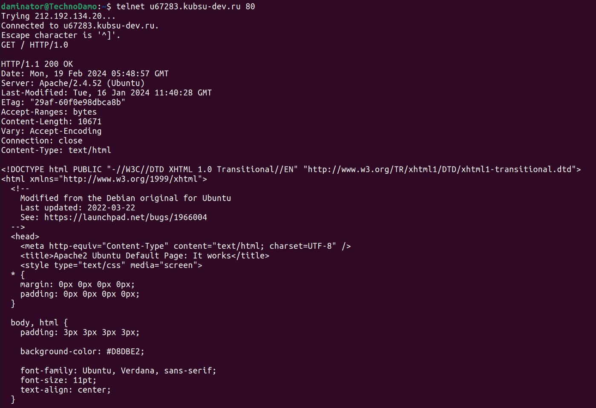
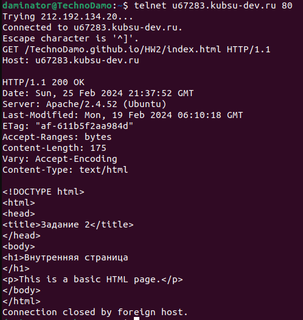
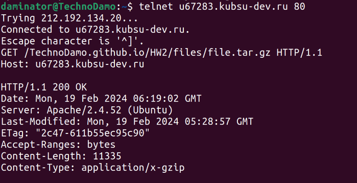
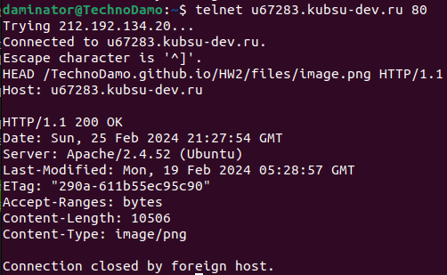
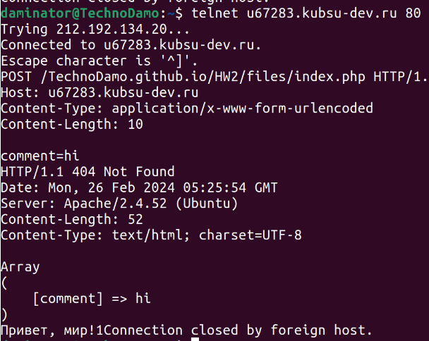
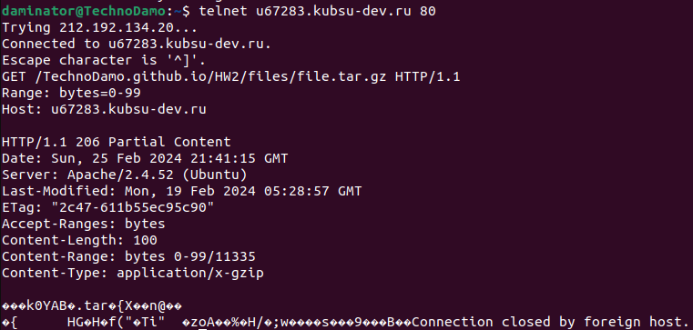
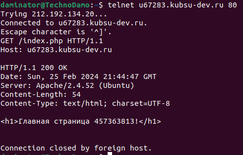

1. получить главную страницу методом GET в протоколе HTTP 1.0;
2. получить внутреннюю страницу методом GET в протоколе HTTP 1.1;
3. Определить размер файла file.tar.gz, не скачивая его;
11335 символов
4. определить медиатип ресурса /image.png;
image/png
5. отправить комментарий на сервер по адресу /index.php;
6. получить первые 100 байт файла /file.tar.gz;
7. определить кодировку ресурса /index.php;
UTF-8
